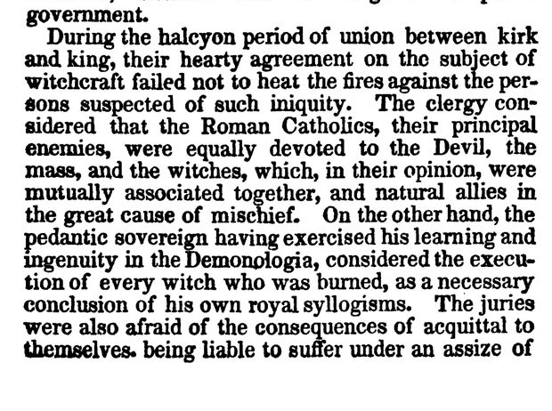

“The halcyon period of union between kirk and king” (Letter IX, p. 261)
English: New York 1830, p. 261, scan. Highlighted: Lecky’s quotation.

… At his departing from Scotland, on his romantic expedition to bring home a consort from Denmark, he very politically recommended to the clergy to contribute all that lay in their power to assist the civil magistrates, and preserve the public peace of the kingdom. The king, after his return, acknowledged, with many thanks, the care which the clergy had bestowed in this particular. Nor were they slack in assuming the merit to themselves, for they often reminded him, in their future discords, that his kingdom had never been so quiet as during his voyage to Denmark, when the clergy were, in a great measure, intrusted with the charge of the public government.
During the halcyon period of union between kirk and king, their hearty agreement on the subject of witchcraft failed not to heat the fires against the persons suspected of such iniquity. The clergy considered that the Roman Catholics, their principal enemies, were equally devoted to the Devil, the mass, and the witches, which, in their opinion, were mutually associated together, and natural allies in the great cause of mischief. On the other hand, the pedantic sovereign having exercised his learning and ingenuity in the Demonologia, considered the execution of every witch who was burned, as a necessary conclusion of his own royal syllogisms. The juries were also afraid of the consequences of acquittal to themselves, being liable to suffer under an assize of error …
Lecky has “against all persons suspected”; Scott “against the persons suspected”.
“The most suspicious of sorcery” (Letter VIII, pp. 198–199)
English: New York 1830, pp. 198–199, scan. Highlighted: Lecky’s quotation (ch. I, note 143).
… these, like the holy water, the robes of the priest, and the sign of the cross, the Calvinists considered either with scorn and contempt, as the tools of deliberate quackery and imposture, or with horror and loathing, as the fit emblems and instruments of an idolatrous system.
Such of them as did not absolutely deny the supernatural powers of which the Romanists made boast, regarded the success of the exorcising priest, to whatever extent they admitted it, as at best a casting out of devils by the power of Beelzebub, the King of the Devils. They saw also, and resented bitterly, the attempt to confound any dissent from the doctrines of Rome with the proneness to an encouragement of rites of sorcery. On the whole, the Calvinists, generally speaking, were, of all the contending sects, the most suspicious of sorcery, the most undoubting believers in its existence, and the most eager to follow it up with what they conceived to be the due punishment of the most fearful of crimes.
Lecky quotes the sentence exactly.
Further down the rabbit hole
Sources that Lecky cites in the notes next to the ones that cite this page.
- Buckle, History of Civilization in EnglandWeather and credulity, and the Scottish clergy’s Devil who had been studying for five thousand years
- Dalyell, The Darker Superstitions of ScotlandThe tortures of the Scottish witch-trials
- Hutchinson, An Historical Essay concerning WitchcraftCounting the English witch-trials, and the last three hanged
- Burt, Letters from a Gentleman in the North of ScotlandBurt’s 1727 pitch-barrel burning at Dornoch
- Pitcairn, Ancient Criminal Trials in ScotlandIsobel Gowdie’s confessions, and who took them
- Neal, The History of the PuritansA boy king signs a death warrant in tears, and the Presbyterians’ heresy law of 1648


Backlinks
Every place in Rationalism in Europe that links to this page (generated automatically when the site is built).